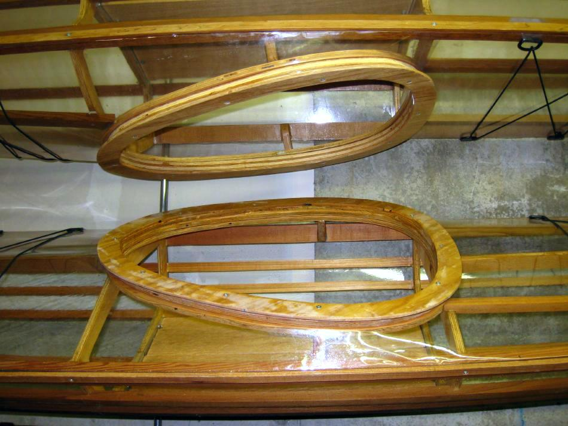

| Coaming (1 of 16) | Menu Previous Page Next Page |
|

There are many different coamings that can be used on SOF kayaks. The instructions provided are for a removable plywood coaming. The Sea Rider and Nikumi display this style coaming above. The "Folding Kayak Builders Manual" includes offsets and instructions for several different types, all of which can be used on the wood SOF's in this manual. In addition the "Inflatable Kayak Builders Manual" includes a removable aluminum coaming that works quite well. Use the {Back} key to return.
|
|